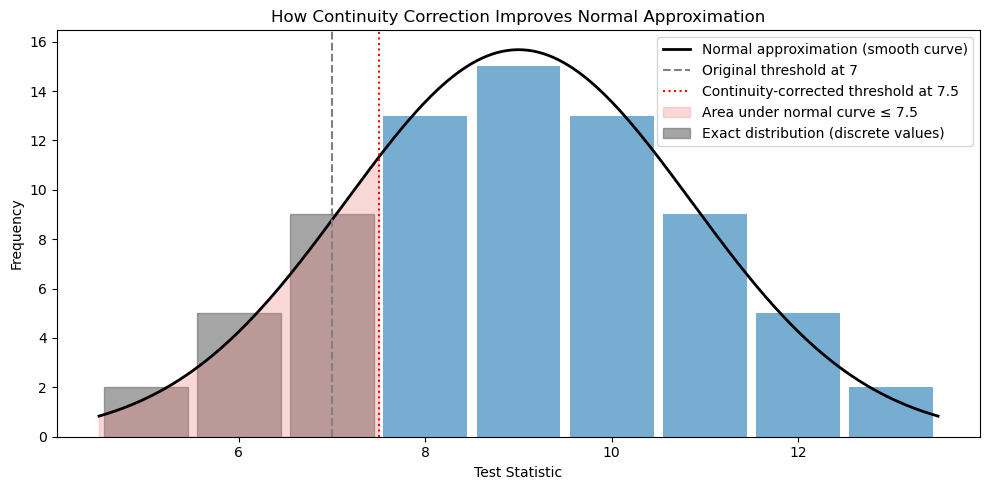
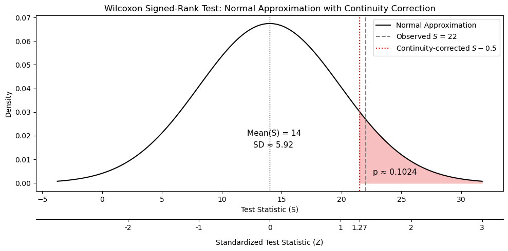

Recognize when the assumptions of the t-tools are violated or when these tools are inappropriate.
Understand the logic and implementation of rank-based and permutation-based alternatives.
Apply and interpret the results of nonparametric tests, including the rank-sum test, signed-rank test, and permutation test.
Nonparametric Methods
Nonparametric methods provide a solution when assumptions of the t-test cannot be met, such as:
Severe skewness in the data.
Large differences in variances between groups.
Small sample sizes that preclude assumptions about the population distribution.
Censored Data
Censored data occurs when the exact value of an observation is unknown, often due to exceeding a measurement threshold (e.g., students taking longer than the maximum allowed time to complete a test).
Rank-based tests, such as the rank-sum test, rely on the ordering of data rather than specific values, making them robust to censored observations.
Permutation Test
A permutation test is a flexible, nonparametric alternative to the two-sample t-test.
Assumptions:
The null hypothesis is true, and all permutations (random shufflings) of the data are equally likely under the null.
The test does not assume normality.
The null distribution is generated by repeatedly permuting the observed data.
Procedure:
Combine all \(n + m\) observations from the two groups.
Randomly reassign labels to simulate permutation under \(H_0\).
Compute a test statistic (e.g., mean, median, or ratio) for each permutation.
Compare the observed test statistic to the permutation distribution.
Applications:
Suitable for small or non-normal datasets, especially when there are ties.
Effective for a wide range of statistics including means, medians, and ratios.
Not appropriate when the data have an inherent order that must be preserved.
Wilcoxon Rank-Sum Test
Purpose:
A distribution-free method for comparing two independent samples.
Particularly useful with small samples, where normality assumptions cannot be assessed.
Resistant to outliers.
Capable of handling censored observations.
Hypothesis:
\(H_0\): The two populations have equal medians.
Procedure:
Combine all observations and rank them (assign average ranks for ties).
Compute the rank sum for one group (typically the smaller group, for ease of computation).
This rank sum serves as the test statistic.
Compute the p-value:
Exact Method:
Evaluate all possible permutations of ranks under \(H_0\) to generate the exact distribution of rank sums.
Compute the proportion of permutations with rank sums as or more extreme than the observed value.
The number of rank sums greater than or equal to the observed value divided by the total number of permutations
Equivalent to a permutation test on the rank sum statistic, rather than the difference in means.
Not computationally feasible for large \(n\).
Normal Approximation:
For larger samples (with few ties), the rank sum statistic approximates a normal distribution.
Compute a Z-statistic using: \[
Z = \frac{T - \text{Mean}(T)}{\text{SD}(T)}
\] Where:
\(T\): The observed rank sum.
\(\text{Mean}(T) = n_1 \bar{R}\), with \(\bar{R}\) the average rank of all combined observations.
\(\text{SD}(T) = s_R \sqrt{ \frac{n_1 n_2}{n_1 + n_2} }\), where \(s_R\) is the standard deviation of all ranks.
Apply a continuity correction to improve p-value accuracy:
Add 0.5 to \(T\) for a left-tailed test.
Subtract 0.5 from \(T\) for a right-tailed test.
This correction improves the match between the discrete statistic and the continuous normal curve.
Confidence Intervals:
Use the Hodges–Lehmann estimator to construct a confidence interval for the difference in medians.
Visualizing the Continuity Correction
When the rank sum distribution is approximated by a normal curve, a continuity correction adjusts for the fact that \(T\) is discrete.
Conceptually:
The rank sum statistic creates a histogram-like distribution (discrete bars).
Exact p-values are based on shaded bar areas beyond a cutoff.
The normal approximation uses a smooth curve instead.
The continuity correction shifts the normal cutoff to the center of the bar, improving the approximation.

How continuity correction improves normal approximation.
Illustration of continuity correction in a rank-based test. The gray bars show the exact (discrete) distribution of the test statistic. The black curve represents the normal approximation. The dashed vertical line at 7 is the unadjusted threshold; the dotted red line at 7.5 shows the continuity-corrected threshold, which more accurately aligns the area under the normal curve (red shaded) with the area of the histogram bars.
Alternatives to the Paired t-Test
Wilcoxon Signed-Rank Test
Hypothesis:
\(H_0\): The median difference between paired observations is zero.
Consider direction for one-sided tests.
Procedure:
Compute differences between pairs.
Rank absolute differences and sum ranks of positive values.
Compute p-value using:
Exact Test: All permutations of rank assignments.
Normal Approximation: \[
\text{Mean}(S) = \frac{n(n+1)}{4}, \quad
\text{SD}(S) = \sqrt{\frac{n(n+1)(2n+1)}{24}}, \quad
Z = \frac{S - \text{Mean}(S)}{\text{SD}(S)}
\]
p-Value: Derived from software or Z-tables.
Notes on the Signed-Rank Test:
Resistant to outliers.
Retains information on both the magnitude and direction of differences.
More powerful than the sign test, especially when magnitude matters.
Wilcoxon Signed-Rank Test Example
Scenario: An employer compares mileage from a 5-day and 4-day work week for 7 employees. The goal is to test whether mileage is lower under the 4-day week (i.e., higher under the 5-day week).
Interpretation: There is insufficient evidence to reject \(H_0\) at a typical 0.05 level.

Normal approximation to the Wilcoxon signed-rank test statistic \(S\) with continuity correction. The curve represents the null distribution with \(\text{Mean}(S) = 14\) and \(\text{SD}(S) \approx 5.92\). The dashed line at \(S = 22\) is the observed value; the dotted line at \(S - 0.5 = 21.5\) reflects the continuity-corrected value. The shaded region corresponds to a one-sided p-value of approximately 0.1024, indicating insufficient evidence to reject \(H_0\).
Sign Test
Purpose:
A simple alternative to the paired t-test.
Tests for a median difference between paired observations.
Less powerful than signed-rank or permutation tests.
Procedure:
Compute the paired differences.
Count the number of positive differences (\(K\)).
Hypothesis:
\(H_0\): \(K = \frac{n}{2}\) (half of differences are positive under \(H_0\)).
Normal Approximation (for large \(n\)):
\[
Z = \frac{K - 0.5 - \frac{n}{2}}{\sqrt{\frac{n}{4}}}
\]
0.5 is a continuity correction.
\(\sqrt{n/4}\) is the standard deviation of \(K\) under \(H_0\).
Levene’s (Median) Test of Equal Spread
Purpose:
Robust alternative to the F-test for comparing group variances.
Helpful when data is non-normal.
Initial visualization (e.g., boxplots) is still recommended.
Hypothesis:
\(H_0\): Groups have equal spread (variance).
\(H_a\): At least one group differs in spread.
Procedure:
For each observation, compute the absolute deviation from the group median: \[
|\text{observation} - \text{group median}|
\]
Conduct a two-sample t-test (or ANOVA) on these deviations.
Interpret the results:
Reject \(H_0\) if the p-value is below the significance threshold, indicating unequal spread.
Notes: - In SAS: - The Brown–Forsythe Test (median-based variant) can be run with proc glm. - Levene’s test (mean- or median-based) is also available in proc glm.
Code Examples
Signed-Rank and Sign Tests in SAS
Code
/* Paired nerve cell density comparison in horses */
data horse;
input horse site1 site2;
datalines;
6 14.2 16.4
4 17 19
8 37.4 37.6
5 11.2 6.6
7 24.2 14.4
9 35.2 24.4
3 35.2 23.2
1 50.6 38
2 39.2 18.6
;
/* Check that the data were read correctly */
proc print data=horse;
run;
/* Run a paired t-test */
/* Assumption of normality may be violated because the sample size is small */
proc ttest data=horse;
paired site1*site2;
run;
/* Set up for nonparametric tests
H0: Median difference between site1 and site2 = 0
HA: Median difference ≠ 0 (two-sided)
or Median difference > 0 (one-sided) */
/* Compute difference between paired values */
data horse2;
set horse;
diff = site1 - site2;
run;
/* Check new dataset with the computed differences */
proc print data=horse2;
run;
/* Run a signed-rank test (incorporates both sign and magnitude of differences)
Note: PROC UNIVARIATE runs:
- paired t-test
- sign test
- signed-rank test */
proc univariate data=horse2;
var diff;
run;
/* Conclusion:
There is strong evidence that the median difference in nerve cell density
between sites is greater than zero
(p = 0.0294, one-sided Wilcoxon signed-rank test). */
Signed-Rank Test in R
Code
# Wilcoxon signed-rank test in R# H0: median difference = 0# HA: median difference ≠ 0 (or > 0 if one-sided)wilcox.test(horse$site1, horse$site2, paired =TRUE)
Levene’s Test in SAS
Code
/* Test prep example: Comparing spread of scores across teaching styles */
data exam;
input score type $;
datalines;
37 New
49 New
55 New
77 New
23 Trad
31 Trad
46 Trad
;
/* Levene’s test (Brown–Forsythe variant based on medians) */
proc glm data=exam;
class type;
model score = type;
means type / hovtest=bf; /* hov = homogeneity of variance; bf = Brown–Forsythe */
run;
/* Manual demonstration of Brown–Forsythe:
Calculate absolute deviations from group medians */
data medianDiff;
input diff type $;
datalines;
15 New
3 New
3 New
25 New
8 Trad
0 Trad
15 Trad
;
/* A t-test on the deviations (diff) should match the Brown–Forsythe result */
proc ttest data=medianDiff;
class type;
var diff;
run;